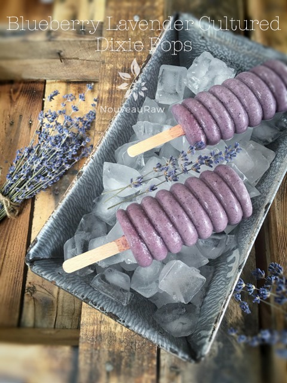
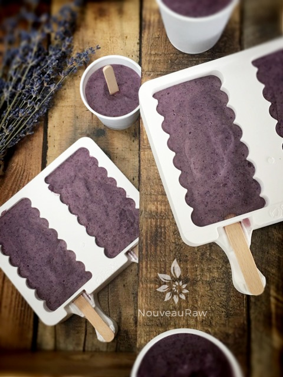
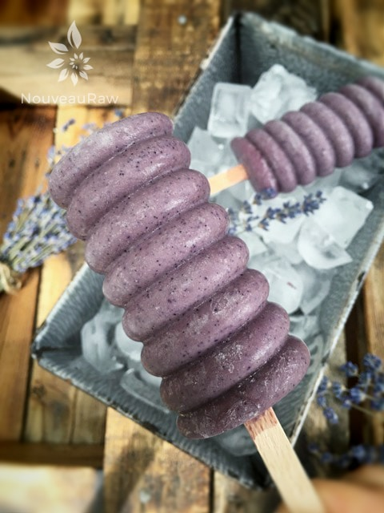
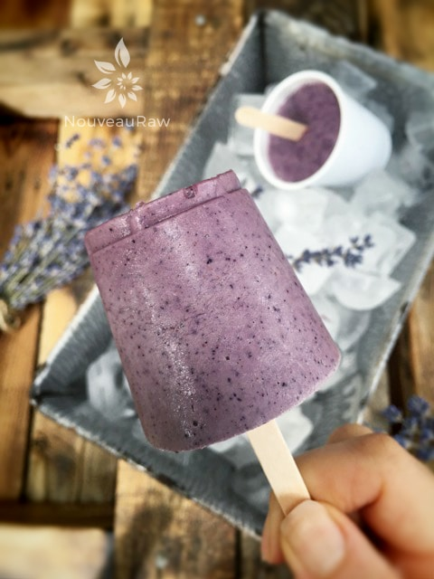

Blueberry Lavender Cultured Dixie Pops

Coconut Blueberry Lavender Dixie Pops are a raw, nut-free, cultured, luxurious treat to pamper yourself with. And if you have a hard time taking time out to do things for yourself… I give you permission.
With each flavor holding its own, they manage to come together in harmony, offering you a refreshing, delicious, and sophisticated popsicle that is like no other.
The one ingredient that really elevates this frozen treat is the use of lavender. If you are new to using lavender in recipes, please read this post before you start. There are a few important keys when using it. First, you need to make sure it is a culinary grade, meaning it is organic and isn’t full of pesticides or your neighbor’s “markings” if you know what I mean.
It is also very easy to add too much lavender and if that is the case… that might be all she wrote. It’s pretty darn powerful in flavor.
Do you want to know a little secret of mine? When I make a recipe, I always take the batter and split it up into many different formations. Like these popsicles for instance. I used two different molds with the same recipe.
For some reason, it feels like I have created two recipes instead of one. One night, I can have a Dixie cup pop, and another night… an elegant looking popsicle. It just makes it feel more special that way. Does that even make sense? I do the same with cracker recipes. I take the one batter and make crackers and croutons out of it. It’s a great way to build up a raw food staple supply when you give each recipe several lives. Anyway, I hope you enjoy this recipe. Many blessings, amie sue
Ingredients:
Yields 2 1/2 cups ( 9 / 3 oz Dixie cups )
- 2 cups fresh organic blueberries
- 1 cup Greek Nogurt
- 1/2 cup raw coconut butter
- 2 Tbsp raw honey
- 1/4 tsp ground lavender buds
- 1/2 tsp vanilla extract
- 1/8 tsp Himalayan pink salt
Preparation:
- In the blender combine blueberries, yogurt, coconut butter, honey, vanilla, lavender, and salt. Blend until nice and creamy.
- Fill the Dixie cups or popsicle molds to the top. Then gently tap each one down onto the countertop to help bring up any bubbles that may be trapped.
- I poked the stick into one of the blueberries to help it stand in place, not to mention a fun surprise to find in the center of the popsicle. Place the stick in the middle of each cup and freeze 4-5 hours or until frozen.
- When ready to enjoy… roll the cup in the palm of your hands for about one minute, then pop the ice cream out. Enjoy!
- Freeze in popsicle molds or 3 oz Dixie cups with a popsicle stick inserted. Always use plastic Dixie cups, the paper ones stick, and you have to tear them off of the ice cream.
-
- Store in the very back of the freezer, as far away from the door as possible. Every time you open your freezer door you let in warm air. Keeping these treats way in the back and storing it beneath other frozen-sold items will help protect it from those steamy incursions.
- Ice cream is full of fat, and even when frozen, fat has a way of soaking up flavors from the air around it—including those in your freezer. To keep your frozen treat from taking on the odors, use a container with a tight-fitting lid.



© AmieSue.com